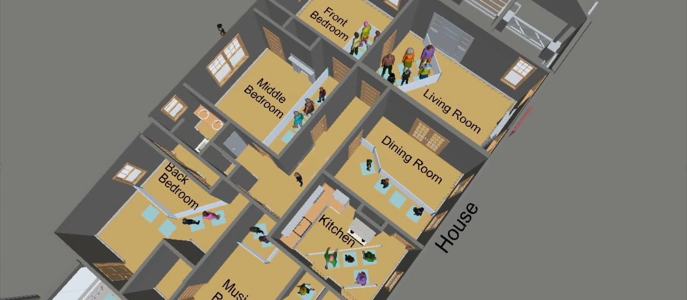
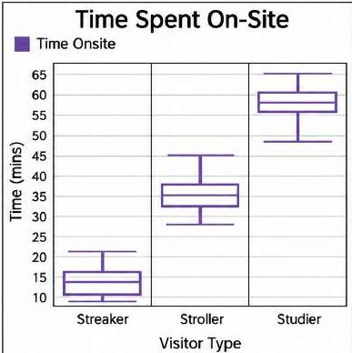
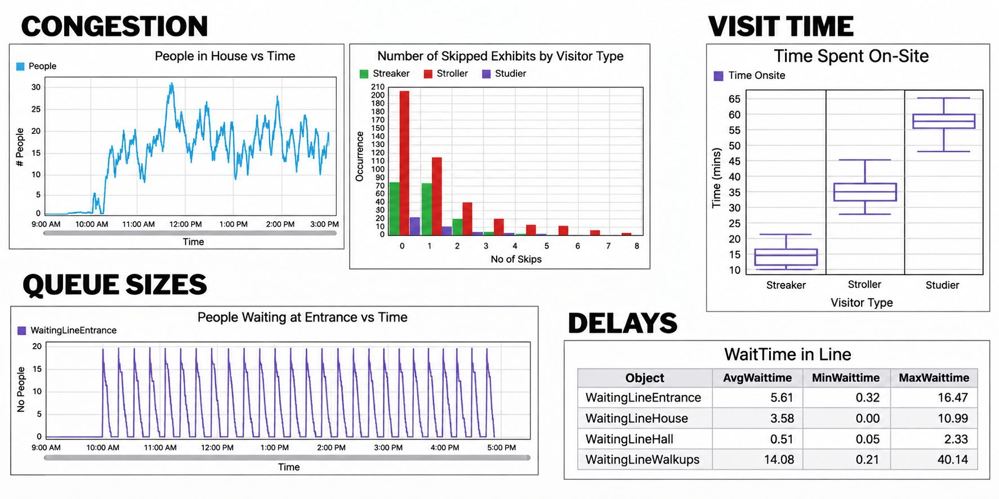
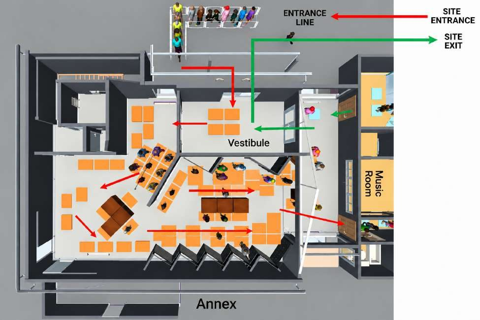
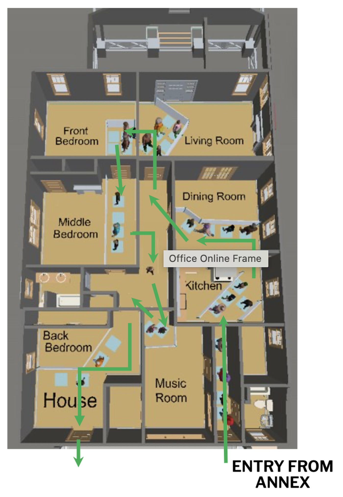
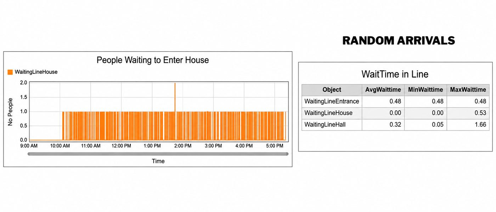
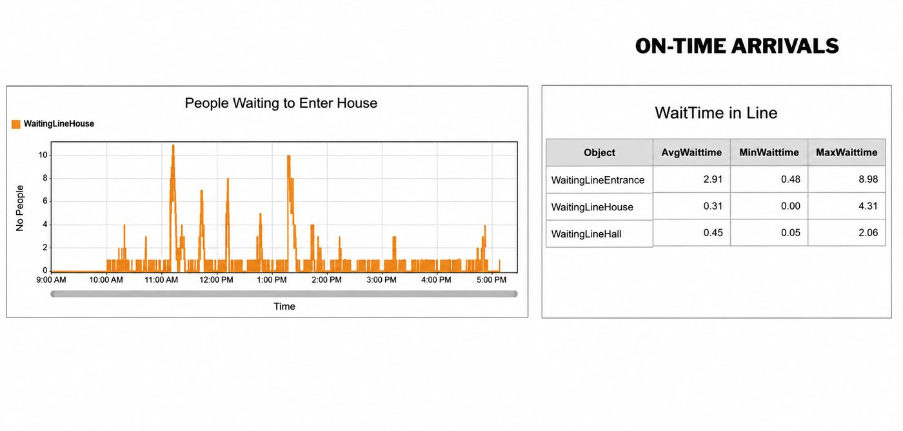
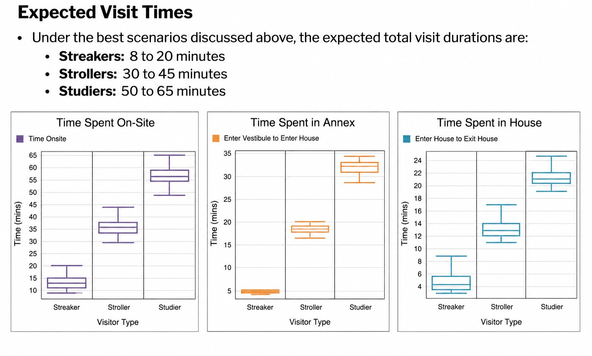
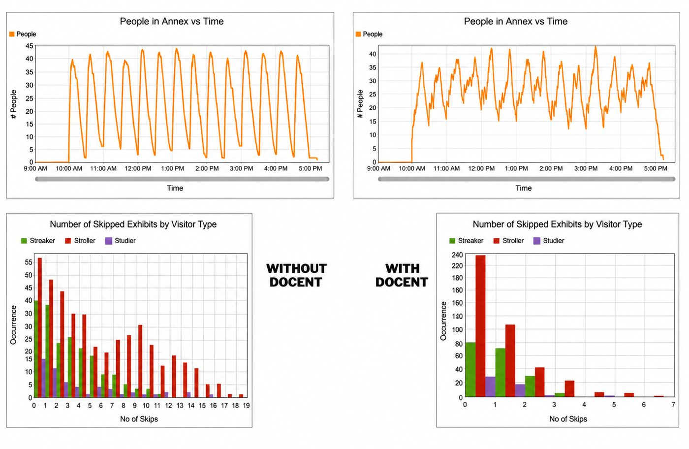
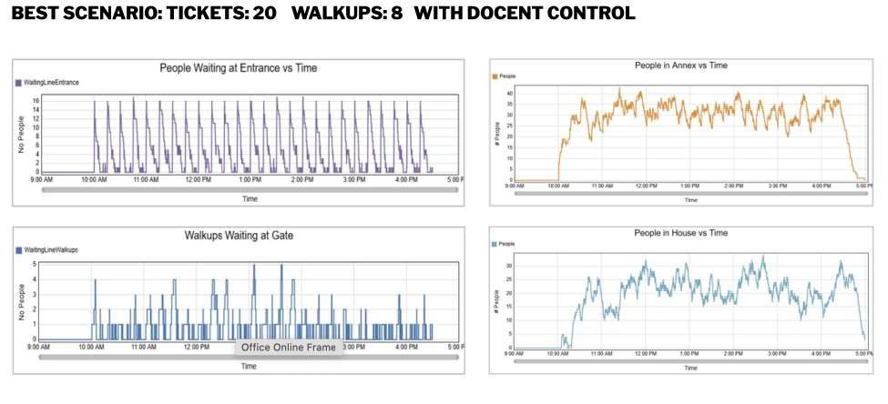

The Henry Ford Jackson Home Visitor Flow Simulation
Project Overview
The Dr. Sullivan and Mrs. Richie Jean Sherrod Jackson Home is a nationally significant historic residence associated with the 1965 Selma to Montgomery marches, where civil rights leaders, including Dr. Martin Luther King Jr., gathered to develop strategies that contributed to the passage of the Voting Rights Act. After being relocated to Greenfield Village at The Henry Ford museum, the home was prepared to open to the public as a permanent exhibition in Summer 2026.
As the first building added to Greenfield Village in more than forty years, there was no historical visitor data to guide operational planning. My role was to develop a predictive visitor flow model that would forecast how guests would move through the constrained historic space before opening day.
Using UX research methodologies and behavioral modeling, I created a visitor simulation that allowed stakeholders to evaluate different ticketing strategies, estimate visitor capacity, identify potential congestion points, and determine where presenters should be positioned to create a comfortable and engaging visitor experience.
The Challenge
No behavioral data existed, planning visitor capacity relied on assumptions rather than evidence. The home's preserved architectural layout introduced additional constraints:
- Narrow circulation paths
- Limited room capacity
- Sequential visitor movement
- Preservation requirements that prevented structural modifications
The challenge became:
How might we predict visitor behavior and optimize the museum experience before the exhibition opened to the public?
Research Questions
To support exhibition planning, I focused on answering several key research questions.
Visitor Experience
- How long will visitors spend inside the home?
- Where are visitors most likely to stop or experience congestion?
- What will waiting times look like throughout the experience?
Capacity Planning
- How many visitors can comfortably occupy both the Jackson Home and Annex (complimentary building with digital interactives) without overcrowding?
- Should visitors enter through 15-minute or 30-minute ticketing windows?
- Can walk-up visitors be accommodated without negatively affecting the experience?
Operations
- Where should docents and presenters be positioned to support visitor flow?
- What traffic management strategies should staff use during peak attendance?
Research Methodology
Because no baseline visitor data existed for the Jackson Home, I combined several UX research methodologies to build a predictive behavioral model.
Behavioral Observation
I analyzed visitor movement within comparable historical homes and nearby exhibitions at The Henry Ford to understand common behavioral patterns. These observations focused on:
- visitor arrival behavior
- walking speed
- dwell time
- congestion points
- exhibit engagement
- decision-making at transitions between rooms
These findings established the behavioral assumptions used throughout the simulation.
Space Syntax Analysis
In collaboration with our experience design team I evaluated the home's architectural layout to understand how visibility, room connectivity, and circulation paths would naturally influence visitor movement. This helped identify areas likely to become bottlenecks before testing any operational scenarios.
Behavioral Path Clustering
Behavioral observations revealed that visitors interact with museum environments differently depending on their engagement level. We simulate this behavior by randomly assigning a visitor type to each person and then reducing the average view time at each exhibit to give the correct %. This results in a very different time profile for each type of visitor to the Jackson Home: To reflect these differences, visitors were grouped into three behavioral archetypes based on existing museum research and validated using historical attendance patterns from The Henry Ford.
Distribution Visitor Type Characteristics
Each simulated visitor was randomly assigned one of these behavioral profiles, allowing the model to better represent realistic variation in visitor behavior.


Building the Simulation
Using behavioral research, I developed a discrete event simulation that modeled individual visitor movement throughout the exhibition. The simulation followed wayfinding based on the expected paths in the home, displayed below. Each visitor independently navigated the home while interacting with operational constraints including:
- timed ticket arrivals
- room occupancy limits
- queue formation
- walking speed
- exhibit dwell time
- presenter intervention
- alternative routing when spaces reached capacity
Rather than moving visitors as a group, every individual made independent movement decisions based on available space and predefined behavioral rules. This allowed the simulation to realistically forecast congestion and visitor flow under multiple operational scenarios.



Baseline Assumptions
Since the exhibition had not yet opened, several assumptions were established using observations from comparable exhibitions. These assumptions provided a consistent foundation for comparing operational scenarios.
These included:
- Visitors arrive within their assigned ticket window.
- Ticket windows operate in either 15-minute or 30-minute intervals.
- Visitors travel independently while naturally clustering into small social groups.
- Average walking speed is approximately 2.0 mph, representing most museum visitors.
- Each exhibit has a maximum occupancy determined by available floor space.
- When capacity is reached, visitors either wait or continue to another available location.
- Individual viewing times vary according to visitor type and natural behavioral variation.
Scenario Testing
STUDY FACTORS
- Ticketing Window:
- 30-minute windows
- 15-minute windows
- Arrival Pattern:
- Random times within ticketing window
- All arrive at start of ticketing window
- Docent Control:
- No constraint – visitors enter if there is space in the vestibule
- With constraint – docent allows ~8 people at a time into entrance area (Vestibule, Pre 1965 and Video Wall)
- Number of tickets:
- Base: 48 per 30-minutes or 24 per 15-minutes
- Low: 38 per 30-minutes or 20 per 15-minutes
- High: 58 per 30-minutes or 28 per 15-minutes
- Walk-up Visitors:
- A limited number of un-ticketed visitors may be allowed to join the queue if the ticketed visitors have entered the building
Ticketing Window & Arrival Patterns
- The effects of these factors are linked
- If visitor arrivals are spread randomly through the ticketing window
- Congestion and queue sizes are low
- Visitors rarely have to skip exhibits
- Total time spent on-site matches expectations
- There is no significant difference between 30-minute or 15-minute ticketing windows

Ticketing Window & Arrival Patterns
- If most visitors arrive close to the start of the ticketing window
- Congestion and queue sizes are high
- With no docent control at the entrance, skipping behavior balloons
- This could result in many unhappy visitors!
- Average time spent on-site increases by just a few minutes, but the maximum time on-site almost doubles!
- In this case, all indicators are much better if 15-minute ticketing windows are used




Findings
Ticketing Strategy
Visitors were expected to arrive near the beginning of their assigned ticket windows, particularly during the exhibition's opening months.
A 15-minute ticketing schedule distributed arrivals more evenly than 30-minute windows, reducing congestion throughout the home.
Capacity
While the home could accommodate a maximum of approximately 32 visitors every 15 minutes, a capacity of 30 visitors per entry window created a noticeably more comfortable visitor experience while maintaining operational efficiency.
Presenter Placement
Simulation results demonstrated that placing presenters near the first exhibits significantly improved visitor flow.
Presenters helped regulate entry into high-demand spaces, reduced skipped exhibits, and minimized bottlenecks during periods of heavy attendance. The recommended staffing model included three to four presenters positioned throughout key zones of the home during opening operations.
Walk-Up Visitors
Allowing a controlled mix of ticketed and walk-up visitors naturally staggered arrivals, reducing congestion and average waiting times while increasing access for guests unable to reserve tickets in advance.
Impact
The visitor flow simulation provided stakeholders with evidence-based recommendations before the Jackson Home opened to the public. The research directly informed operational planning by helping teams:
- establish ticketing schedules for opening operations
- determine comfortable visitor capacity limits
- identify high-congestion areas before opening
- optimize presenter placement throughout the home
- evaluate queue management strategies
- deciding factor for where to place digital interactives in the exhibit
- improve visitor flow while preserving the historic integrity of the building
Rather than relying on assumptions alone, leadership was able to make operational decisions supported by predictive behavioral research and simulation.
10
Reflection
This project broadened my understanding of user experience beyond digital products, demonstrating how UX research methodologies can be applied to improve experiences within physical environments. It also deepened my appreciation for how visitors engage with and process complex, emotionally significant stories, particularly those centered on difficult history
—